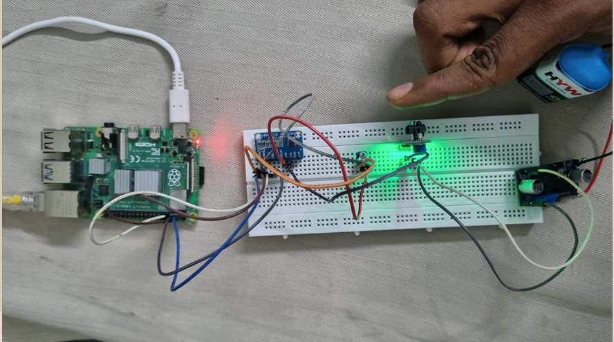
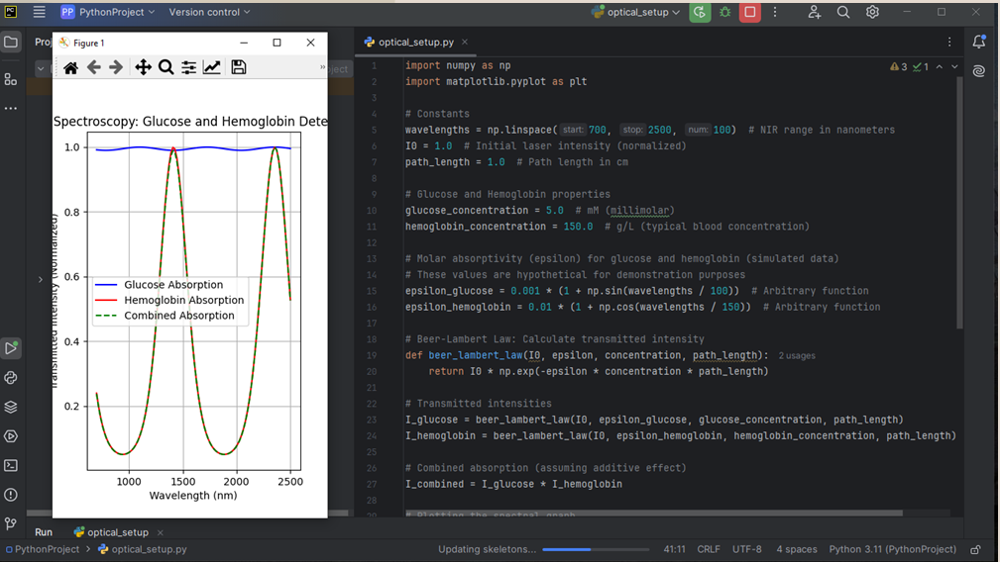

This project introduces a continuous glucose monitoring system using FTIR and NIR spectroscopy to avoid painful finger-pricking. The design combines multiple laser sources, an InGaAs detector, and advanced signal processing techniques including Fourier transforms and spectral subtraction to achieve high accuracy.
Key Techniques:
The project flow includes optical design using Zemax OpticStudio, signal acquisition, frequency domain analysis, and inverse transform for final glucose level estimation.
  ← Back to Portfolio